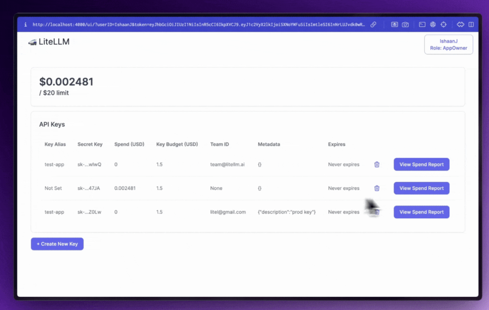
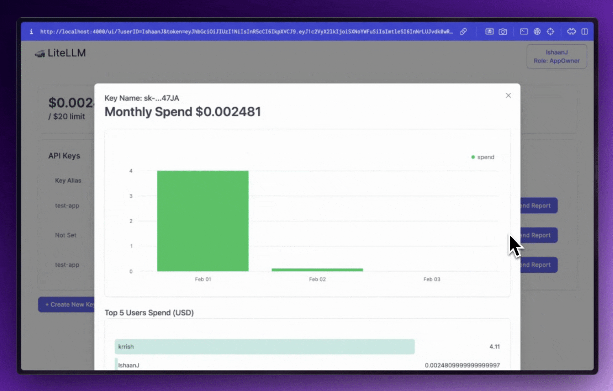
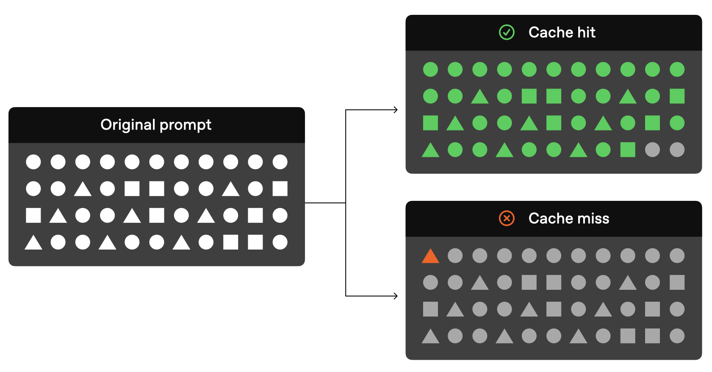
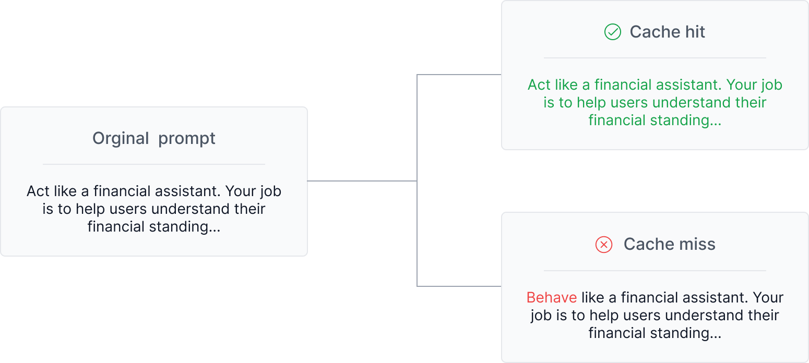
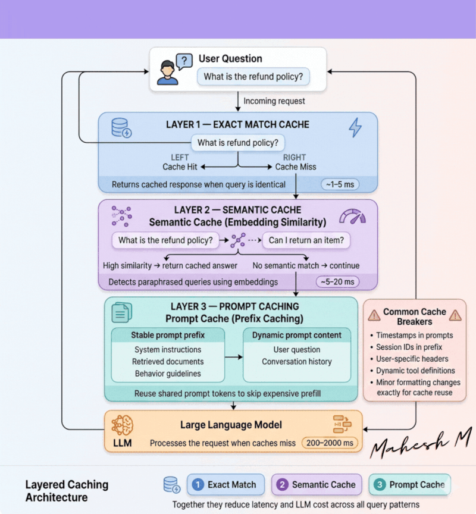

Gateway 하나로 가용성·비용·관측성 통합
서비스가 커질수록 동시에 닥치는 7가지 문제.
운영 현장에서 한 번은 만나는 장면들.
Azure APIM + AI Gateway. 네이티브 통합 · 엔터프라이즈 표준.
Portkey · Helicone. 가장 빠른 도입 · 관측성 UI.
LiteLLM. 완전 셀프호스팅 · 100+ Provider 통합.
FastAPI 직접 구현. 제어권 100% · 유지비 100%.


장애 대응. 1 → 2 → 3순위. 429/5xx/timeout 트리거.
분산·쿼터 회피. 동일 모델 멀티 리전 50/50. 확률적 분배.
품질·비용 균형. 쿼리 분류 후 모델 선택.
실시간 고객 챗봇.
1순위 Azure East US
2순위 Azure West Europe
3순위 OpenAI 직접
트리거: 429 · 5xx · timeout>30s
동일 모델 멀티 리전 분산.
Azure East US 50%
Azure West Europe 50%
동일 모델 (예: GPT-5.4)
효과: 단일 리전 쿼터 회피 + 장애 격리
개발자 지원 Copilot.
"멀티스텝 코딩" → Opus 4.7
"간단 FAQ" → Haiku 4.5
"복잡 디버깅" → o4-mini
"초장문 문서" → Gemini 3.1 Pro
| 프로바이더 | 모델 | I/O ($/1M) | 포지션·특징 |
|---|---|---|---|
| OpenAI | GPT-5.5 | 신규 | 차세대 flagship · 2026-04 롤아웃 |
| GPT-5.4 | 2.50 / 15 | 안정 flagship · 프로덕션 표준 | |
| GPT-5.4-mini | 0.75 / 3 | 균형 티어 · 가성비 | |
| GPT-5.4-nano | 0.20 / 0.80 | 초경량 분류 · Cascade 1단 | |
| o4-mini | 1.10 / 4.40 | Reasoning 전용 · o3-mini 후속 | |
| Anthropic | Claude Opus 4.7 | 5 / 25 | 최신 flagship · 2026-04-16 · Coding·Agent 최강 |
| Claude Opus 4.6 | 5 / 25 | 안정 flagship · 프로덕션 검증 | |
| Claude Sonnet 4.6 | 3 / 15 | 균형 · 128K 출력 + extended thinking | |
| Claude Haiku 4.5 | 1 / 5 | 저가·저지연 · Cascade 1단 유력 | |
| Gemini 3.1 Pro | ~3 / 15 | Flagship · 2M 컨텍스트 · 멀티모달 | |
| Gemini 3.1 Flash | ~0.30 / 1.20 | 균형 · 빠른 범용 응답 | |
| Gemini 3.1 Flash Live | 스트리밍 | 실시간 음성·비전 · sub-1s TTFT | |
| Gemini 3.1 Flash Lite | ~0.10 / 0.40 | 초경량 · 번역·분류 최저가 |
| 업무 | 모델 | 이유 |
|---|---|---|
| 스팸·카테고리 분류 | GPT-5.4-nano / Gemini 3.1 Flash Lite | 저난도·고빈도 · 최저가 |
| FAQ 자동 응답 | Claude Haiku 4.5 | 짧고 반복됨, 저지연 |
| 고객 문의 요약 | GPT-5.4-mini / Claude Sonnet 4.6 | 품질·비용 균형 |
| 긴 보고서 초안 생성 | Claude Sonnet 4.6 | 128K 출력 + 추론 |
| 2M 토큰 규모 문서 분석 | Gemini 3.1 Pro | 2M 컨텍스트 유일급 |
| 멀티모달 영수증 OCR | GPT-5.4 / Gemini 3.1 Pro | 네이티브 이미지 입력 |
| 실시간 음성 상담 봇 | Gemini 3.1 Flash Live | sub-1s TTFT · 스트리밍 |
| 장기 Agent (멀티스텝 코딩) | Claude Opus 4.7 | Coding·Agent 최강 |
| 복잡 수학·다단계 논리 | o4-mini / Opus 4.7 | Reasoning |
Retry-After 헤더를 주면 계산값 대신 그 값을 사용Idempotency-Key: {user}-{tool}-{hash(body)}-{ts}fallback.reason · fallback.from · fallback.to · retry.count변경 이력 추적
승인 워크플로우
플래그 플립으로 즉시
regression set 실행
| 툴 | 특징 | 추천 상황 |
|---|---|---|
| Langfuse (OSS) | Prompt 버전 + Trace + A/B | 내부 호스팅 필요 |
| PromptLayer | 버전·Eval·Regression | SaaS로 바로 시작 |
| Braintrust | Eval 중심 실험 플랫폼 | 평가가 최우선 |
| Traceloop | Prompt Registry + OTel | OTel 기반 관측 |
| Maxim AI | Prompt + Simulation + Eval | End-to-end 통합 |
Portkey · LiteLLM · Langfuse · Redis · GPTCache 공통 용어.
Provider가 관리 · prefix 토큰 매칭
입력 50~90%↓ · 지연 최대 85%↓
리스크: 매우 낮음
Gateway(Redis) · 전체 해시 일치
LLM 호출 0 · 지연 ~10ms · 비용 0
리스크: 낮음 (키 설계)
Gateway(VectorDB) · 의미 유사도
적중률 10~70% (도메인별) · +5~20ms
리스크: 높음 · 오적중 주의
같은 prefix면 HIT, 한 토큰만 달라도 MISS. prompt 설계가 곧 캐시 적중률.


| Provider | 활성화 | 최소 prefix | 가격 · TTL 핵심 (2026-04) |
|---|---|---|---|
| OpenAI | 자동 (opt-out 불필요) | 1,024 tokens | 캐시 입력 ×0.5 (-50%) · 자동 TTL 5~10분 |
| Anthropic | 명시적 cache_control: {type:"ephemeral", ttl?:"1h"}최대 4 breakpoint / 요청 |
Opus 4.7/4.6/4.5: 4,096 Sonnet 4.6: 2,048 Haiku 4.5: 4,096 |
읽기 ×0.1 (-90%) · 쓰기 ×1.25 (5분) / ×2.0 (1시간 GA) 워크스페이스 격리 (’26-02-05~) · 룩백 20 블록 |
| Google (Gemini) | 명시적 CachedContent API |
4,096 tokens (Pro/Flash) | 캐시 입력 -75% · TTL 임의 지정 |
전체 프롬프트 + 파라미터 + 모델의 해시로 매칭. 한 글자만 달라도 다른 키.
임베딩 cosine 유사도 ≥ threshold면 HIT. 글자가 달라도 의미만 같으면 적중.
